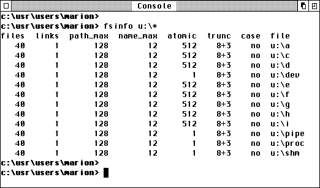

The MiNT project of the Canadian Eric Smith made possible for the first time the use of alternative file-systems, and with that the use of long filenames under TOS. This was achieved through the introduction of new GEMDOS functions.
These new functions however do not have to be present only when MiNT is installed: MagiC as of Version 3.0 possesses some MiNT-compatible functions; also MetaDOS drivers with corresponding functionality have been spotted. For this reason it is imperative that interrogation for the MiNT cookie should be removed from all programs. The presence of a GEMDOS function can be recognized by the fact that the function does not return the value EINVFN.
To obtain information about the underlying file-system, one should use the GEMDOS function Dpathconf.

The above illustration shows the limitations of a pure TOS file system for the various drives. The column files specifies the maximum number of files that may be opened per process (apart from process-internal limits). Under links one can see the maximum number of links to a file that may exist. path_max shows how long complete filenames (including the path) may be on the file-system. The column name_max shows the maximum length of a filename, and under atomic is specified how many bytes may be written per write operation. The column trunc is specially important, showing how over-length filenames will be truncated. Finally, under case one can tell whether and how filenames with mixed capitals and lower case will be supported.
The rule of thumb is: Always continue using filenames and paths exactly as they were presented by the operating system; basically, write filenames in lower case, as even on systems with mixed capitals and lower case, filenames in capitals are rather the exception!
See also: XFS-concept in MagiC Dpathconf